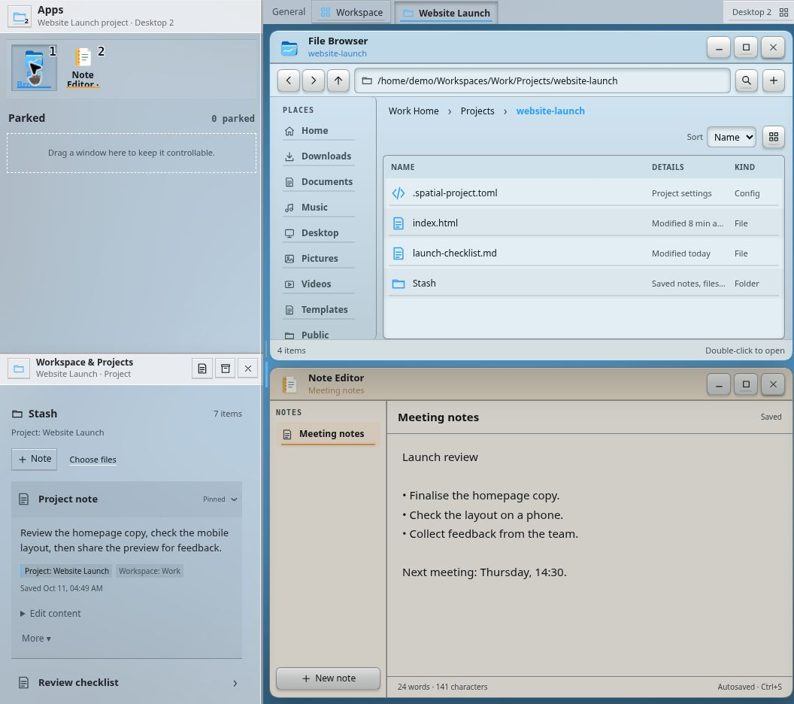

SPATIAL DESKTOP · WRITTEN BY XEF
Design philosophy.
A new edition, written one topic at a time.
Author’s draft · in progress. Chapters will be added as their text is written. The previous design record and its historical screenshots remain available.
01 / APP AREA
App area.
Parking apps
On a conventional panel, I find it difficult to tell which apps are minimized and which are open, because they are all next to each other.
Here, open apps are always visible in front of you on the desktop, and appear at the top of the App area. Parked apps sit below them.
One important thing about parked apps is that they stay in the App area when you switch desktops. That makes them ideal for use as widgets.


Captured from the working prototype on 11 October 2026. These are details of the App area; click either image to see its desktop context. Try the desktop: park a window, then switch desktops.
The hotbar
On today’s desktops, quick app switching usually means Alt+Tab or an app overview. I find that clunky. That is why I borrow the numbered hotbar from games for quick switching between apps.
To make this work without taking my hand off the mouse, I use a mouse button to activate the hotbar. Since many desktops already use Win/Super for app-switching shortcuts, I use the same key here. That lets me switch quickly between apps.


In the browser demo, Alt + number is also available when the operating system intercepts Super shortcuts. Activating the hotbar from a mouse button is the intended setup; the web prototype does not configure mouse-button mappings.


Order and visibility
Section text has not been added yet.
Expanded area and rail
Section text has not been added yet.